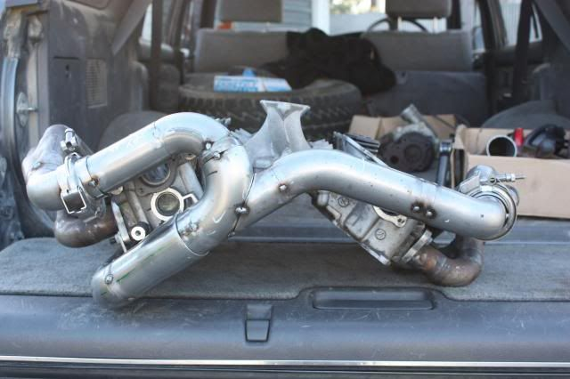
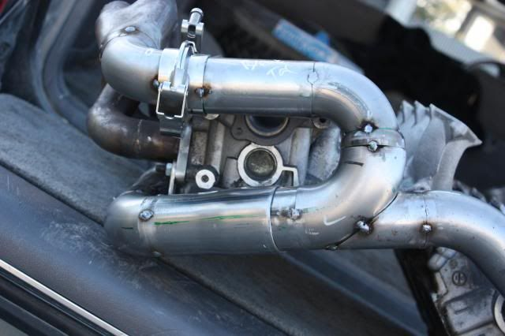
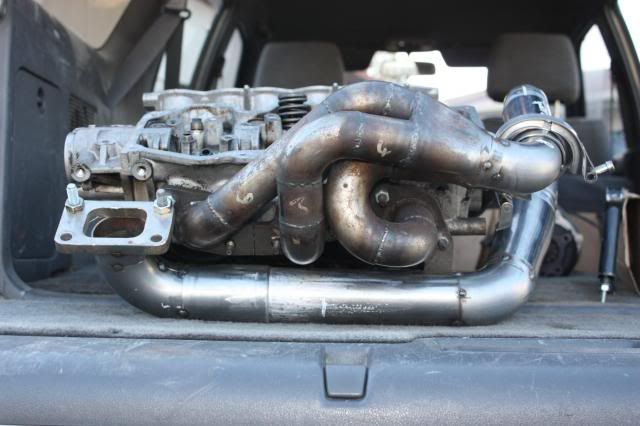
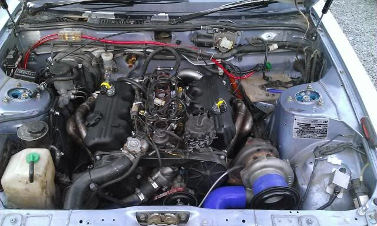
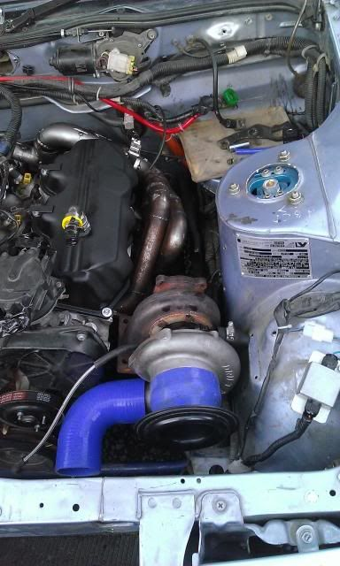
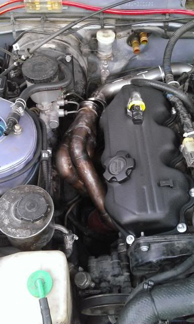
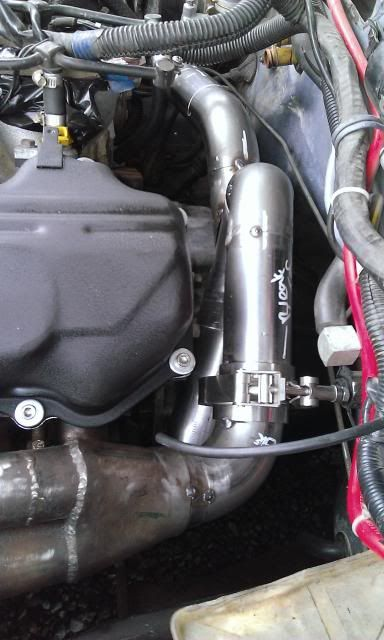

-
Quite a few changes, basically re did the whole "Y" part of the merge. Lengths are equal withing about 2-3mm

one of the slip joins ( unfinished but good enough for an on the car test fit )

And the ther slip join - again unfinished but good enough to determine turbo position once its on the car.

Hopefully have Flexi's soon
then its all about fitting them up in the engine bay, on the actual VG they will be running on, flexi's will be installed very very last to provide a last chance for crucial alignments.
I know why I Sat on these so long, its my 3rd weekend fitting these up.85 Turbo Slick Top
__________________________________________________ _____ -
I have been thinking… could one make the runners go forward toward the front instead of going back like the stock setup without much issue? Wouldn't it be sweet if you could position the engine slightly further toward the firewall, have less manifold piping because your manifold runners are facing forward and then go divided flange/twin scroll/QSV. I am guessing PS pump might be the biggest obstacle however just imagining it in my head it seems very doable. -
That setup you described has been done several times, Satan, Flawlez , streetfighter and Mike G have done it like that before. This thread is all about rear mount85 Turbo Slick Top
__________________________________________________ _____ -
My major complaint with this setup is one of the main benefits you add to the exhaust in trying to equalize lengths, you take away by making it single-scroll
Aside from that the fabrication itself looks very good -
I was leaning more towards a quick spool valve and perhaps a 0.82 divided turbine housing.
but that doesn't matter, What matters is getting it on the car and having a working Z31 again, and enjoying the sound it makes.85 Turbo Slick Top
__________________________________________________ _____ -
This may be a silly question but if its an equal length manifold, all the exhaust pulses will be separated so why do you need to make the pipe bigger from the primary pipe size? Seems like its not needed.Straya, +61 -
It seems to be the generally accepted way of doing it, my own reason for doing it was that 2 1/4 fits onto the turbo flange perfectly for fabrication.85 Turbo Slick Top
__________________________________________________ _____ -
You have all been waiting for this




Some ovious issues to be sorted with the brake master cylinder and some new brake lines need to be made up. But to be fair, these were made on the bench and for them to fit that close to the first time around is almost a miracle.
The drivers side is hitting on an exhaust stud that needs shortened down so the clearance issues may not be as bad as shown in the photo.85 Turbo Slick Top
__________________________________________________ _____ -
You'll need to relocate all the wires and hoses on the strut tower sides down to the frame rail and cover them with a solid heatshield, polishes stainless sheet would look the best but any cheap aluminum should work as long as it stands off enough from everything
Looks like the downpipe will be a pain to make
One option for the brake master is to go boosterless, if you upgrade to the z32 master, you will have more fluid flowing to the fronts, so you can change the pedal ratio to make it easier to press -
yeah it's all part of it,already relocated the fuel filter,vac tank and power steering hoses. I'm going to get a bunch of fire sleeve covering for the wiring then make a bunch of heat shields downpipe will be cake once I have a v band flange welded to the turbine housing. Turbo needs to come toward the front a bit but that's what test fit is all about.G-E;n761156 wrote: You'll need to relocate all the wires and hoses on the strut tower sides down to the frame rail and cover them with a solid heatshield, polishes stainless sheet would look the best but any cheap aluminum should work85 Turbo Slick Top
__________________________________________________ _____ -
BTW if you do put an external wastegate, a good place for it might be towards the back, and run the dump tube straight down into the downpipe… well not "straight" but you know what I mean
-
RX7 brake booster.89' Turbo-R.I.P. (scrapped)
87' NA all parts swapped from 89', Stance, 3.3 long block, hx35w, Injector Dynamics 1000cc, isky cams, pathfinder intake, front mount, megasquirt v3.57 w/MS3X
07 Frontier XE <----(turd) daily -
Wow, I missed this thread. Great job. Too bad they go around the wrong end of the motor.
I get 15psi at 3000rpms on my manifolds with a BB 50 trim T3/T04Ejames;n494474 wrote: Take no notice of the T3, i have a GT3582 Journal bearing with a 0.62 hotside on the car at the moment.
On the cast manifolds i could get 8-10 psi by about 3000rpm with the GT35. I'm hoping for a huge improvement.BLOZ UP.com
It is not recommended to confirm proper installation by driving into walls or other barriers as this could cause personal injury or damage to the vehicle. -
If they are equal length, the single scroll won't negate all of the beneficial effects. Depends a lot on where the final merge is though.G-E;n495190 wrote: My major complaint with this setup is one of the main benefits you add to the exhaust in trying to equalize lengths, you take away by making it single-scroll
Aside from that the fabrication itself looks very goodBLOZ UP.com
It is not recommended to confirm proper installation by driving into walls or other barriers as this could cause personal injury or damage to the vehicle. -
Just curious. When you welded this up did you have the heads bolted to the LIM without using the block? Good stuffvg30'd s13 in progress. Shocks. Pegs. Lucky.

Copyright © 2006–. All rights reserved. Privacy Policy